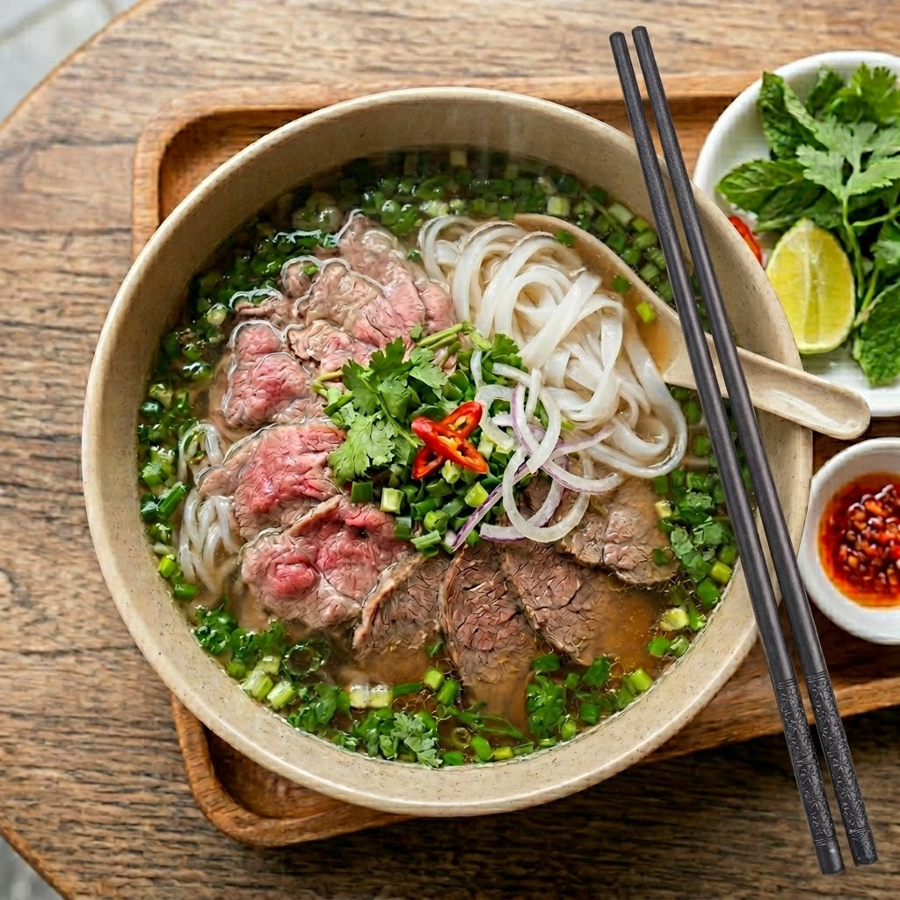

Phở là món ăn truyền thống tiêu biểu của người Việt Nam. Thành phần chính tạo nên một bát phở ngon bao gồm: bánh phở, nước dùng được ninh từ xương ống bò, thịt bò hoặc thịt gà và phần rau ăn kèm. Nơi nổi tiếng nhất với món phở tại Việt Nam là Hà Nội và Nam Định
Phở là món ăn truyền thống tiêu biểu của ẩm thực Việt Nam, kết hợp tinh tế giữa bánh phở mềm dẻo, thịt bò hoặc gà cùng nước dùng ninh xương đậm đà hương vị thảo mộc. Món ăn này không chỉ chinh phục thực khách khắp thế giới bởi hương vị thanh tao, ấm áp mà còn là biểu tượng văn hóa sâu sắc của người Việt.
Thẻ span khi không có thuốc tính title thì không làm thay đổi gì trên màn hình. Thẻ span là thẻ inline.
xem thêm